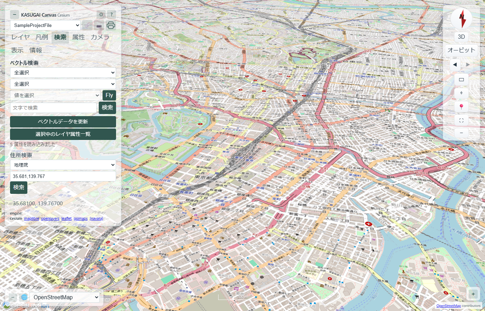

使い方
🔎 住所検索
国土地理院の住所検索 API（既定）と Yahoo Local Search API（yahooAppId 設定で有効化）を使い、住所・施設名で検索してクリックで FlyTo します。Google Maps Platform の Geocoding / Places を使うハイブリッド検索は 管理 → Google Maps で API キーを登録すると利用できます。
検索窓は座標の直接入力にも対応しており、「35.681,139.767」「139.767,35.681」（経度・緯度順も可）、「N35°41' E139°46'」「35度41分 139度46分」のような度・度分秒表記を入力すると、ジオコーディングを介さずその地点へ直接 FlyTo します。

🧬 ベクトル検索
読み込み済みベクター（GeoJSON/GeoParquet/FlatGeobuf 等の全件読み込み系）の属性値を「レイヤー → 属性 → 値」の三段階またはテキスト検索で絞り込み、行クリックで FlyTo します。対象範囲は「全選択（非表示・未読込レイヤーも検索時に読み込んで対象化）」「表示レイヤ」「個別レイヤー」から選べます。クエリ系レイヤー（duckdb:/sql:/gpkg:）は索引ではなく SQL フィルター側で検索する設計のため対象外です。
設定方法（.kasc 等）
yahooAppId: Yahoo Local Search のアプリケーションID（住所検索に Yahoo を併用）
searchtab: 定型検索タブ（geo_search 相当の検索タブを追加）- Google Maps Platform の Geocoding / Places によるハイブリッド検索は、管理 ⚙ → Google Maps で API キーを登録します（6-4 Google Maps）
- 住所検索の既定プロバイダは国土地理院の住所検索 API で、設定なしで動作します
関連ページ
- 1-4 属性 — 属性テーブルの文字列検索・SQL フィルタ
- 6-4 Google Maps — Geocoding / Places のハイブリッド検索設定
- 5-3 AI ツール仕様 —
searchLocation・vectorSearch・searchPlaces